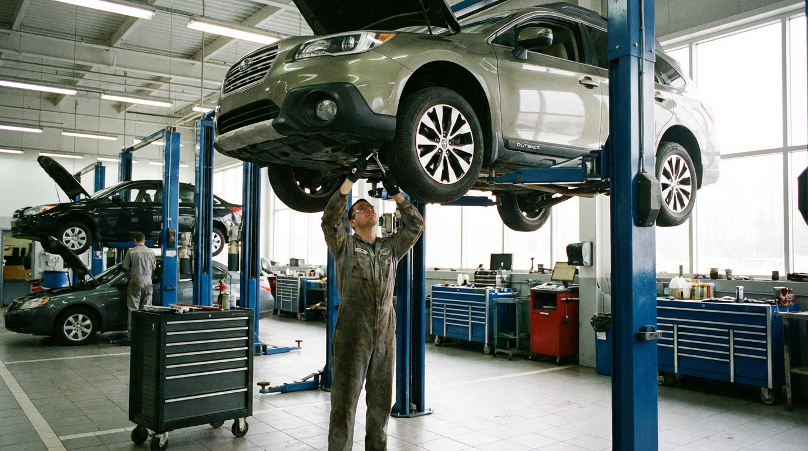

Auto repair shops and mechanics rely on financing to purchase lifts, diagnostic equipment, and shop tools—and to cover payroll, inventory, and facility costs. Axiant Partners connects repair shop owners with lenders offering equipment financing, SBA loans, working capital, and more. Whether you run an independent shop, franchise, or specialty service, we match you with financing that fits your operation and cash flow.
Industry Overview
Auto repair shops face high capital requirements for lifts, diagnostic scanners, alignment equipment, and specialty tools. Parts inventory, labor costs, and facility overhead create cash flow pressure—especially when invoice payments lag or seasonal demand shifts. Many shop owners need financing to acquire or upgrade equipment without draining reserves. Working capital helps cover payroll, parts, and operating expenses during revenue gaps.
Lifts and diagnostic equipment can cost $10,000–$100,000 or more; alignment racks and specialty tools add substantial expense. Equipment financing and working capital loans help auto shops expand capabilities and manage day-to-day operations. SBA loans support longer-term needs like real estate, business acquisition, and major facility upgrades, while lines of credit provide flexibility for parts and payroll.

How Auto Repair Shop Owners Use Financing for Their Business
Auto repair shop owners use financing for lifts, diagnostic equipment, and day-to-day operations. Many finance lifts, alignment racks, and scan tools through equipment loans—spreading the cost of $10,000–$100,000+ in gear over several years. Working capital helps cover payroll, parts inventory, and rent when invoice payments lag or seasonal demand shifts. SBA loans support shop acquisition, facility buildouts, or adding bays to grow capacity.
Parts inventory and labor costs create cash flow pressure. A shop owner might use a line of credit to stock up on parts for busy seasons or large repair jobs. Another might finance a second lift to add capacity and reduce wait times. Whether upgrading to EV diagnostic tools, expanding the shop, or managing payroll between pay cycles, auto repair owners use financing to invest in capability and growth.
Auto Repair Shop Financing Options
Shop owners need financing for lifts, diagnostic equipment, parts inventory, and bay expansion. Whether you're searching for auto repair equipment financing, mechanic shop loans, or auto shop working capital, the right product depends on your use of funds and timeline.
Common Auto Repair Equipment That Shops Finance
Auto repair shops frequently finance lifts, diagnostic tools, and specialty equipment. Below are common types, typical cost ranges, and why shops finance them.

Lifts & Hoists
Two-post and four-post lifts are essential for undercarriage work, oil changes, and tire service. Lifts typically cost $3,000–$25,000 or more depending on capacity and type. Financing helps shops add bays or replace aging equipment.
How to finance an auto lift
Diagnostic Equipment
OBD scanners, oscilloscopes, and advanced diagnostic tools identify engine, transmission, and electrical issues. Diagnostic equipment typically costs $2,000–$30,000 or more. Financing helps shops add diagnostic capabilities and service newer vehicles.
How to finance diagnostic equipment
Tire Changers & Balancers
Tire changers and wheel balancers support tire service and rotations. Equipment typically costs $3,000–$15,000 or more depending on capability. Financing helps shops add tire services or replace worn units.
How to finance tire equipment
Alignment Racks
Wheel alignment systems ensure proper suspension and tire wear. Alignment racks typically cost $15,000–$80,000 or more depending on features. Financing helps shops add alignment services and capture additional revenue.
How to finance an alignment rack
Brake & Rotor Equipment
Brake lathes, disc grinders, and brake service tools support brake repair and resurfacing. Equipment typically costs $2,000–$20,000 or more. Financing helps shops add brake services or upgrade to professional-grade equipment.
How to finance brake equipment
Shop Tools & Storage
Tool chests, air compressors, specialty wrenches, and shop storage support daily operations. Tool packages and storage can cost $5,000–$50,000 or more. Financing helps shops outfit new bays or upgrade tools for efficiency.
How to finance shop tools and storageEquipment Financing Guides for Auto Repair Shops
Auto repair shop owners considering equipment loans often ask these questions. Our guides cover credit requirements, used equipment, rates, and approval timelines. For equipment-specific guides, see Equipment by Type. For a full overview, see Equipment Financing.
Apply for Auto Repair Business Financing
Auto repair shops need financing that fits repair cycles and cash flow. Axiant Partners connects shop owners with lenders that offer equipment loans, working capital, SBA loans, and more. Submit your information once and we match you with programs suited to your business profile. Get matched with a lender or contact our team to discuss your needs.